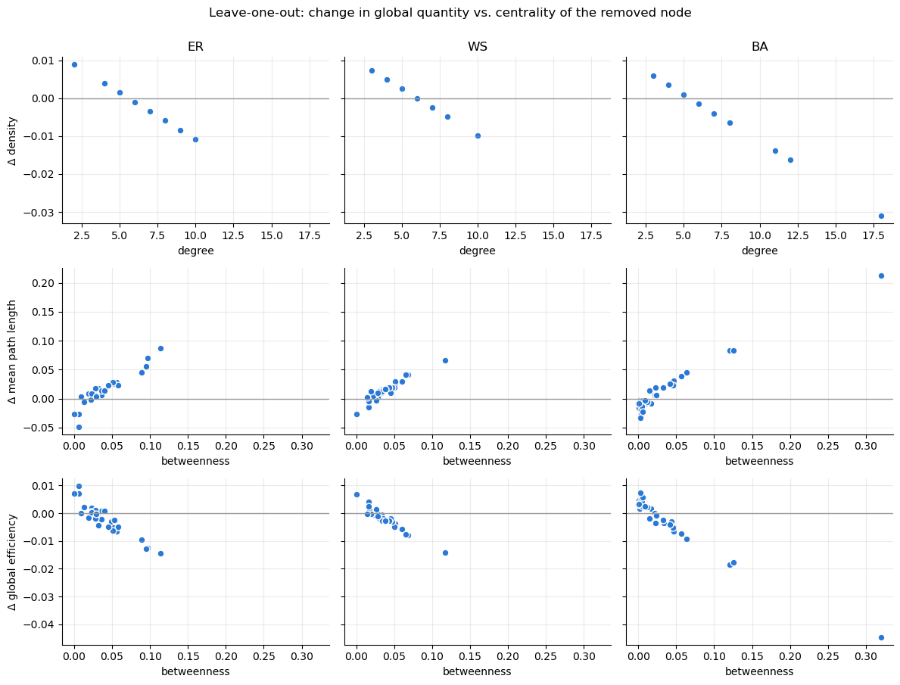
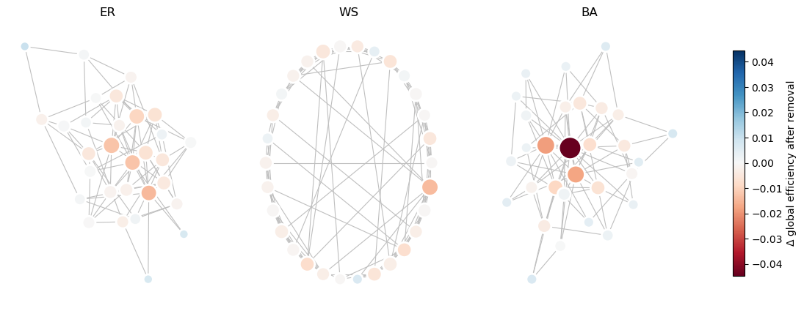
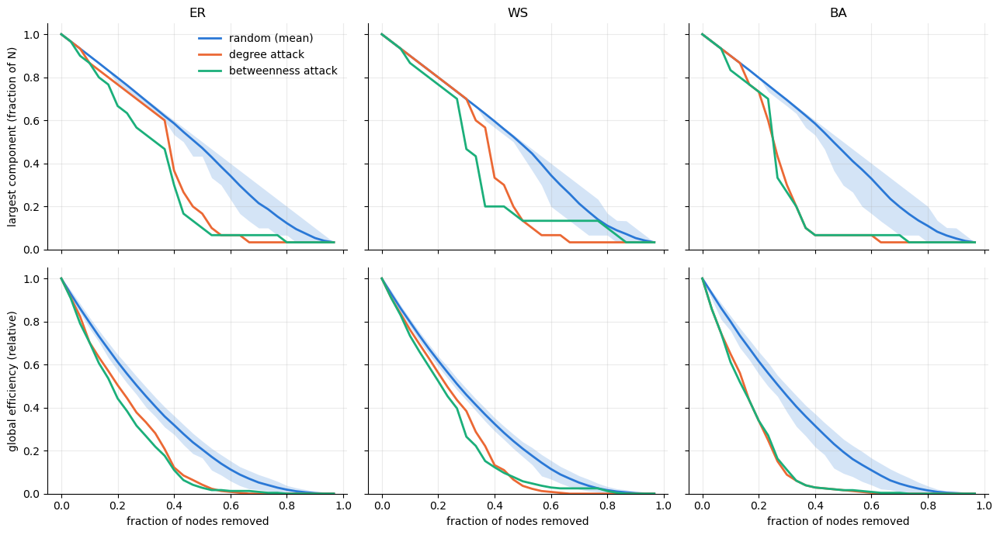

import networkx as nx
import numpy as np
import pandas as pd
import matplotlib.pyplot as plt
from matplotlib.colors import Normalize
plt.rcParams.update({
'axes.spines.top': False, 'axes.spines.right': False,
'axes.grid': True, 'grid.alpha': 0.25, 'lines.linewidth': 2,
})Network Perturbations: Leave-One-Out and Sequential Node Removal
Companion to networks_random.ipynb. Three graphs with the same size and (nearly) the same mean degree are perturbed by deleting nodes, and the response of global quantities is measured.
- Leave-one-out (LOO): delete each node once, recompute, record the change Δ.
- Sequential removal: keep deleting nodes, either at random (failure) or hubs first (attack).
The graphs
Density is matched: the ER edge probability is set to \(p = \langle k \rangle / (N-1)\), so that topology rather than edge count drives any difference. (With the original \(p = 0.5\) the ER graph has more than twice the edges of the WS graph.) A Barabási–Albert graph is added as a third case because its heavy-tailed degree distribution makes the attack/failure contrast obvious. All generators are seeded for reproducibility.
N = 30
k = 6 # target mean degree
p = k / (N - 1) # ER edge probability matched to WS density (try 0.5 to compare)
beta = 0.3 # WS rewiring probability
seed = 1234
graphs = {
'ER': nx.erdos_renyi_graph(N, p, seed=seed),
'WS': nx.watts_strogatz_graph(N, k, beta, seed=seed),
'BA': nx.barabasi_albert_graph(N, k // 2, seed=seed),
}
layouts = {
'ER': nx.spring_layout(graphs['ER'], seed=seed),
'WS': nx.circular_layout(graphs['WS']),
'BA': nx.spring_layout(graphs['BA'], seed=seed),
}Global quantities
average_shortest_path_length fails as soon as the graph is disconnected, so global efficiency \(E = \frac{1}{N(N-1)}\sum_{i\neq j} 1/d_{ij}\) is added: it behaves like an inverse path length but stays defined (unreachable pairs contribute 0). The fraction of nodes in the largest connected component is also tracked.
def global_quantities(G):
n = G.number_of_nodes()
connected = n > 1 and nx.is_connected(G)
giant = max((len(c) for c in nx.connected_components(G)), default=0)
return {
'mean degree': 2 * G.number_of_edges() / n if n else np.nan,
'density': nx.density(G),
'mean path length': nx.average_shortest_path_length(G) if connected else np.nan,
'global efficiency': nx.global_efficiency(G),
'giant component': giant / n if n else 0.0,
}
baseline = pd.DataFrame({name: global_quantities(G) for name, G in graphs.items()}).T
baseline.round(3)| mean degree | density | mean path length | global efficiency | giant component | |
|---|---|---|---|---|---|
| ER | 5.6 | 0.193 | 2.117 | 0.547 | 1.0 |
| WS | 6.0 | 0.207 | 2.067 | 0.558 | 1.0 |
| BA | 5.4 | 0.186 | 2.018 | 0.559 | 1.0 |
1. Leave-one-out
For every node \(v\): remove it, recompute, store \(\Delta Q_v = Q(G \setminus v) - Q(G)\).
def leave_one_out(G):
base = global_quantities(G)
btw = nx.betweenness_centrality(G)
rows = []
for v in G.nodes:
H = G.copy()
H.remove_node(v)
q = global_quantities(H)
rows.append({'node': v, 'degree': G.degree(v), 'betweenness': btw[v],
**{f'Δ {key}': q[key] - base[key] for key in base}})
return pd.DataFrame(rows).set_index('node')
loo = {name: leave_one_out(G) for name, G in graphs.items()}
# the five most damaging single deletions in the WS graph
loo['WS'].sort_values('Δ global efficiency').head().round(4)| degree | betweenness | Δ mean degree | Δ density | Δ mean path length | Δ global efficiency | Δ giant component | |
|---|---|---|---|---|---|---|---|
| node | |||||||
| 29 | 10 | 0.1168 | -0.4828 | -0.0099 | 0.0663 | -0.0141 | 0.0 |
| 20 | 7 | 0.0678 | -0.2759 | -0.0025 | 0.0417 | -0.0078 | 0.0 |
| 26 | 7 | 0.0657 | -0.2759 | -0.0025 | 0.0417 | -0.0076 | 0.0 |
| 24 | 7 | 0.0605 | -0.2759 | -0.0025 | 0.0294 | -0.0057 | 0.0 |
| 5 | 7 | 0.0590 | -0.2759 | -0.0025 | 0.0294 | -0.0057 | 0.0 |
How large are the effects, and what predicts them?
summary = {}
for name, df in loo.items():
b = baseline.loc[name]
summary[name] = {
'max |Δ MPL| (%)': 100 * df['Δ mean path length'].abs().max() / b['mean path length'],
'max |Δ efficiency| (%)': 100 * df['Δ global efficiency'].abs().max() / b['global efficiency'],
'corr(Δ density, degree)': df['Δ density'].corr(df['degree']),
'corr(Δ MPL, betweenness)': df['Δ mean path length'].corr(df['betweenness']),
'corr(Δ eff., betweenness)': df['Δ global efficiency'].corr(df['betweenness']),
}
pd.DataFrame(summary).T.round(3)| max |Δ MPL| (%) | max |Δ efficiency| (%) | corr(Δ density, degree) | corr(Δ MPL, betweenness) | corr(Δ eff., betweenness) | |
|---|---|---|---|---|---|
| ER | 4.118 | 2.666 | -1.0 | 0.934 | -0.927 |
| WS | 3.210 | 2.531 | -1.0 | 0.948 | -0.956 |
| BA | 10.560 | 7.985 | -1.0 | 0.981 | -0.980 |
rows = [('degree', 'Δ density'),
('betweenness', 'Δ mean path length'),
('betweenness', 'Δ global efficiency')]
fig, axes = plt.subplots(len(rows), len(graphs), figsize=(12, 9), sharey='row', sharex='row')
for j, (name, df) in enumerate(loo.items()):
for i, (x, y) in enumerate(rows):
ax = axes[i, j]
ax.axhline(0, color='0.6', lw=1)
ax.scatter(df[x], df[y], s=40, color='#2a78d6', edgecolor='white', linewidth=1)
if i == 0:
ax.set_title(name)
if j == 0:
ax.set_ylabel(y)
ax.set_xlabel(x)
fig.suptitle('Leave-one-out: change in global quantity vs. centrality of the removed node', y=1.0)
fig.tight_layout()
Reading the plots
- Row 1 – density (and mean degree) is trivial. Removing a node of degree \(k_v\) gives exactly \(\rho' = 2(M - k_v)/\big((N-1)(N-2)\big)\), a straight line in \(k_v\) (correlation −1). LOO on these quantities only re-ranks nodes by degree. Note also \(\langle k \rangle = \rho\,(N-1)\), so they are the same measurement.
- Rows 2–3 – path-based quantities carry information. The impact tracks betweenness, i.e. how many shortest paths run through the node. Effects are small (a few percent) in these dense-ish graphs.
- Negative ΔMPL / positive ΔE occur when a peripheral node is removed: its long paths leave the average. That is a normalisation effect, not an improvement of the network – worth pointing out to students.
Impact map
Node colour = Δ global efficiency when that node is removed (red = loss), node size = degree.
vabs = max(df['Δ global efficiency'].abs().max() for df in loo.values())
norm = Normalize(-vabs, vabs)
cmap = plt.cm.RdBu
fig, axes = plt.subplots(1, len(graphs), figsize=(15, 5))
for ax, (name, G) in zip(axes, graphs.items()):
df = loo[name]
nx.draw_networkx_edges(G, layouts[name], ax=ax, edge_color='0.75', width=0.8)
nx.draw_networkx_nodes(G, layouts[name], ax=ax,
node_color=[cmap(norm(df.loc[v, 'Δ global efficiency'])) for v in G],
node_size=[40 + 25 * G.degree(v) for v in G],
edgecolors='white', linewidths=2)
ax.set_title(name)
ax.axis('off')
fig.colorbar(plt.cm.ScalarMappable(norm=norm, cmap=cmap), ax=axes, shrink=0.8,
label='Δ global efficiency after removal');
2. Sequential removal: failure vs. attack
Single deletions barely move these graphs. Removing nodes one after another separates them clearly.
- random – failure; averaged over many runs (band = 5–95 % range)
- degree – attack on the current highest-degree node (recomputed after each removal)
- betweenness – attack on the current highest-betweenness node
Tracked: size of the largest component and global efficiency, both relative to the intact graph. Efficiency is averaged over the original \(N(N-1)\) node pairs (removed nodes count as unreachable); otherwise a small surviving fragment such as a single edge would have efficiency 1 and the curve would rise again.
def removal_curve(G, strategy, rng=None):
H = G.copy()
N0, E0 = G.number_of_nodes(), nx.global_efficiency(G)
giant, eff = [1.0], [1.0]
for _ in range(N0 - 1):
if strategy == 'random':
v = rng.choice(list(H.nodes))
elif strategy == 'degree':
v = max(H.degree, key=lambda x: x[1])[0]
elif strategy == 'betweenness':
b = nx.betweenness_centrality(H)
v = max(b, key=b.get)
H.remove_node(v)
giant.append(max(len(c) for c in nx.connected_components(H)) / N0)
n = H.number_of_nodes()
# efficiency counted over the ORIGINAL N(N-1) pairs, so it can only decrease
eff.append(nx.global_efficiency(H) * n * (n - 1) / (N0 * (N0 - 1)) / E0)
return np.array(giant), np.array(eff)
n_random = 100
rng = np.random.default_rng(seed)
curves = {}
for name, G in graphs.items():
rand = np.array([removal_curve(G, 'random', rng) for _ in range(n_random)]) # (runs, 2, N)
curves[name] = {
'random': rand,
'degree': removal_curve(G, 'degree'),
'betweenness': removal_curve(G, 'betweenness'),
}strategy_colors = {'random': '#2a78d6', 'degree': '#eb6834', 'betweenness': '#1baf7a'}
f = np.arange(N) / N # fraction of nodes removed
fig, axes = plt.subplots(2, len(graphs), figsize=(13, 7), sharex=True, sharey='row')
for j, name in enumerate(graphs):
for i, label in enumerate(['largest component (fraction of N)', 'global efficiency (relative)']):
ax = axes[i, j]
rand = curves[name]['random'][:, i, :]
ax.fill_between(f, np.percentile(rand, 5, axis=0), np.percentile(rand, 95, axis=0),
color=strategy_colors['random'], alpha=0.2, lw=0)
ax.plot(f, rand.mean(axis=0), color=strategy_colors['random'], label='random (mean)')
for s in ['degree', 'betweenness']:
ax.plot(f, curves[name][s][i], color=strategy_colors[s], label=f'{s} attack')
ax.set_ylim(0, 1.05)
if i == 0:
ax.set_title(name)
else:
ax.set_xlabel('fraction of nodes removed')
if j == 0:
ax.set_ylabel(label)
axes[0, 0].legend(frameon=False)
fig.tight_layout()
One number per graph: robustness \(R\)
To get back to a single global number per graph, integrate the largest-component curve: \(R = \frac{1}{N}\sum_{q} s(q)\) (Schneider et al., PNAS 2011). \(R \approx 0.5\) is maximally robust, small \(R\) means the network falls apart quickly. The same can be done for the efficiency curve.
R = {}
for name, c in curves.items():
R[name] = {
'R random (giant)': c['random'][:, 0, :].mean(),
'R degree attack': c['degree'][0].mean(),
'R betweenness attack': c['betweenness'][0].mean(),
'R_E random (eff.)': c['random'][:, 1, :].mean(),
'R_E degree attack': c['degree'][1].mean(),
}
pd.DataFrame(R).T.round(3)| R random (giant) | R degree attack | R betweenness attack | R_E random (eff.) | R_E degree attack | |
|---|---|---|---|---|---|
| ER | 0.485 | 0.371 | 0.337 | 0.322 | 0.238 |
| WS | 0.488 | 0.376 | 0.359 | 0.325 | 0.254 |
| BA | 0.478 | 0.288 | 0.286 | 0.320 | 0.176 |
Things to try
- Set
p = 0.5(the original ER graph): LOO effects shrink to ~1 % – dense graphs are robust to single deletions. - Vary
betafrom 0 (ring lattice, all nodes equivalent → all LOO values identical) to 1 (random). - Increase
Nto 200+: the attack/failure gap in the BA graph widens (use fewer random runs; betweenness attack gets slow). - Edge perturbations: the edge analogue of LOO is removing each edge in turn; its impact tracks
nx.edge_betweenness_centrality.